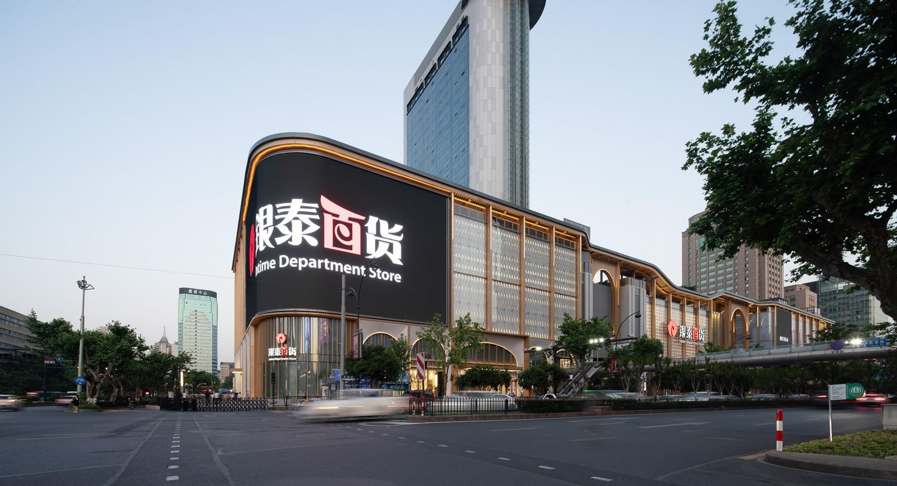

01
Data first
Understand the place and its people before deciding what to change. We study location, visitors, how space is used and how the place performs, and keep facts, assumptions and evidence gaps apart.
Six strategies


KYWOO STUDIO · EVIDENCE-BASED PLACEMAKING
KYWOO delivers evidence-based placemaking strategies for existing urban public spaces, commercial spaces and historic-town cultural tourism destinations. We blend data, spatial and activity research and intelligence to bring quiet places back to life as vibrant urban destinations.
About us KYWOO STUDIO
What we do Data × Space × Activity · Six strategies
Data / Space / Activity
From insight to space, then to lasting use.
Brand runs through all three: who the place is for, how it speaks, and what keeps people coming back.
Commercial Place Research & Diagnostics
Understand why a commercial place underperforms and which problems to tackle first. We study location, catchment, visitors, competition, trading performance, use of space, entrances and circulation, and separate facts, assumptions and evidence gaps.
Key outputsPlace diagnosis, problem priorities, opportunities and the research behind them.
DataSpaceActivityCommercial Place Positioning & Strategy
Decide who the commercial place serves, what distinct value it offers and how it can sustain itself commercially: target visitors, positioning, tenant and use mix, commercial mechanisms and phasing.
Key outputsPositioning and value proposition, mix strategy, commercial mechanisms and roadmap; where data allows, scenarios for cost, rent, vacancy and NOI.
DataSpaceActivityCommercial Place Renovation & Tactical Interventions
Turn strategy into change people can experience through local, flexible and testable interventions, such as better entrances and street frontages, places to linger, temporary structures and public space pilots.
Key outputsPlacemaking strategy, key node concepts, light-touch pilots and phasing advice.
DataSpaceActivityCommercial Programming & Place Activation
Plan everyday uses, cultural content, events and brand partnerships that fit the place, built around why people come, stay and return, rather than relying on one-off events.
Key outputsActivation themes, content and events framework, pilot plan and partnership advice.
DataSpaceActivityCommercial Impact Evaluation & Learning
Set a baseline before intervening, then track change with suitable measures such as footfall, dwell time, use of space, vacancy and trading performance to inform the next round of decisions, keeping correlation apart from impact that can be shown to be causal.
Key outputsBaseline and stage reviews, pilot review and improvement advice.
DataSpaceActivityUrban, Commercial & Cultural Destination Design
For urban districts, commercial complexes, historic towns and visitor destinations, we organise how buildings, landscape, public space, walking routes and experience nodes relate, so commerce, culture and public life happen together.
Key outputsOverall spatial concept, public space and circulation strategy, functional layout and key node design.
DataSpaceActivityOur principles
01
Understand the place and its people before deciding what to change. We study location, visitors, how space is used and how the place performs, and keep facts, assumptions and evidence gaps apart.
Six strategies02
We work with existing urban public spaces, commercial spaces and historic-town destinations, making the most of the streets, nodes and resources already there instead of tearing down and rebuilding.
03
Local, flexible and testable interventions turn strategy into change people can feel. We observe before and after each pilot, then decide whether to keep, adjust or stop.
Commercial Place Renovation & Tactical Interventions04
The three work together: data shows the problem, space answers the need, activity keeps the place alive. Brand runs through all three, shaping who the place is for and how it speaks.
See the triangle05
Architecture and urban design, commercial strategy and brand, data research and programming work side by side. Teams form around the problem, agree scope and roles first, then move together.
ContactWhat we care about is why people come, where they stay, how they spend, and whether they come back.
Cases Current projects · Past experience

Current project · Historic town
Where should activities go?
DataSpaceActivityReading lanes and nodes to discuss where activities could go.
View the research reportEarly-stage research · password required · not a delivered project.

Current project · Commercial space
First the surroundings: how do people get here?
DataSpaceActivityUnderstanding urban connections from real roads and buildings.
View the research reportGeographic study · location is not a boundary · not commissioned work.
Urban renewal reference
Reusing infrastructure to connect public space
DataSpaceActivityA disused elevated road beside Seoul Station became a pedestrian garden. Planting, places to pause, and many stairs, lifts and footbridges reconnect the surrounding neighbourhoods. It shows how existing infrastructure can become everyday public space for walking, resting and city life.
Original design: MVRDV
MVRDV project pageA published project by others, used to illustrate an approach. Not a KYWOO project.
Urban renewal reference
Reviving a historic quarter for mixed use
DataSpaceActivityBy keeping, repairing and reusing historic buildings and former industrial spaces, a once-closed compound became a cultural quarter open to the public. Bookshops, food, exhibitions and events, linked by lanes, squares and public spaces, let the existing place hold a wide range of everyday uses.
Official introduction, Changning District, ShanghaiA published project by others, used to illustrate an approach. Not a KYWOO project.

JOA architecture project
Atrium, valley courtyards and a vertical garden
DataSpaceActivityA central atrium and valley-like courtyards tie city life to nature, with terraced pocket parks visitors can walk through. A vertical garden on the south facade gives shaded places to work.
Foshan · 2021 · Headquarters, retail and offices · c. 41,000 m²
JOA project pageAn architecture project by JOA (justopenarch.com); the KYWOO team member's role is still to be added. Images load directly from the JOA website.

JOA architecture project
A museum with a public passage through it
DataSpaceActivityThe museum is broken into human-scale clusters set into a redeveloped waterfront district. A central passage links it to the public spaces around it and can hold exhibitions as well as large civic events, so the museum draws people all day and all year. Timber modules can be replaced and their materials reused.
Turku, Finland · 2023–2024 · Concept competition · 9,068 m² · Museum, restaurant, café, bookshop, children's play area and temporary exhibition hall
JOA project pageAn architecture project by JOA (justopenarch.com); the KYWOO team member's role is still to be added.

JOA architecture project
An idle car park becomes a riverside public node
DataSpaceActivityAn underused car park beside a tributary of the Qinhuai River becomes a public node, reachable from three directions and linking the far bank with the district to the north. The massing follows the cross-shaped grid of the historic lanes, forming nine connected spaces.
Nanjing · 2022 · Concept · 4,447 m²
JOA project pageAn architecture project by JOA (justopenarch.com); the KYWOO team member's role is still to be added. Images load directly from the JOA website.

JOA architecture project
Archaeology, a city park and a new library
DataSpaceActivityThree layers are tied together: archaeological remains below ground, paths on the surface and the trees of the city park. A new central library grows out of them, so people meet the city's history in everyday life.
Tartu, Estonia · 2023 · Concept · Masterplan and library · 18,246 m²
JOA project pageAn architecture project by JOA (justopenarch.com); the KYWOO team member's role is still to be added. Images load directly from the JOA website.
JOA architecture project
A wind tower and public steps under grapevines
DataSpaceActivityA ventilation tower stands in the square, ringed by eight grape trellises and stepped timber platforms for everyday lingering. It makes the local Cierzo wind visible and felt and helps cool the space in summer. Prefabricated parts on screw-pile foundations can be taken down and reused.
Logroño, Spain · 2026 · Concept competition · 50 m² · Public installation and seating
JOA project pageAn architecture project by JOA (justopenarch.com); the KYWOO team member's role is still to be added.

Project experience
Commercial asset enhancement and rebranding
DataSpaceActivityStarting from research on the existing mall and a rebrand, the work brought together interior layout, façade and facility upgrades to rebuild the mall's identity and visitor experience. Coordination through design, tender and construction turned the asset enhancement strategy into concrete spatial improvements.
Roles and project status to be added. The photo is an openly licensed picture of the place, not the team's own photography.

Project experience
Renewal of an existing hotel
DataSpaceActivityUsing the renewal of an existing hotel to explore design directions that keep the place's character and improve the guest experience, giving the hotel asset new appeal.
Roles and project status to be added. The photo is an openly licensed picture of the place, not the team's own photography.
Contact Contact and FAQ
Start by framing the problem: where is the place, how is it used today, and what would you like to improve first?
Place and location: How it is used today: What you want to improve: Data and observable clues you already have:
“Contact” opens your email app with our address filled in; “WeChat” copies our WeChat ID. This page does not collect or send anything.
Existing urban public spaces, commercial spaces and historic-town destinations that want to find their problems and new opportunities for use. Whether an intervention fits depends on first understanding the place.
Yes. We first confirm goals, data and site conditions, then discuss one spot or one light intervention. Scope, roles and how we measure are agreed for each project.
In "Cases", the current projects, Zhujiajiao and Wulin Intime, are at the early research stage (the Zhujiajiao report needs a password); they are not delivered commissions. Under past experience, "Project experience" describes past projects, with roles and status still to be added; "JOA architecture projects" come from JOA (justopenarch.com), with the KYWOO team member's role still to be added; "Urban renewal references" are published projects by others. No image is KYWOO project photography; see each project and "Sources and disclosures".
We start with questions drawn from data and site observation, compare spatial and activity options, then refine the judgement through pilots and reviews. Brand can run through space and activity; untested spatial potential is never treated as measured footfall.
Brand, spatial and data analysis and event planning are organised around the project's question. We agree scope and deliverables first, then the division of work. Past projects shown here will note roles and status; individual past experience is not the same as work completed by KYWOO.
Move towards a direction of the triangle or a strategy around it; click to pin it: what it connects to lights up and the panel explains it. Click the same circle again or press Escape to return to the full diagram. "Pause motion" stops the floating and particles; on phones, tap to select.
No. The page is not connected to financial data and shows no projected returns. Spatial comparisons only explain how we work; they are not an investment, leasing or operating commitment.